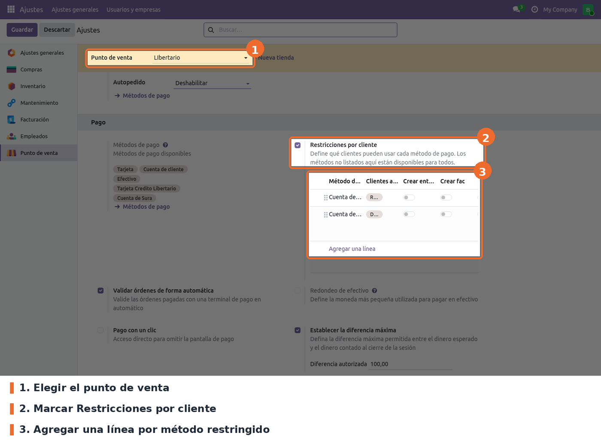
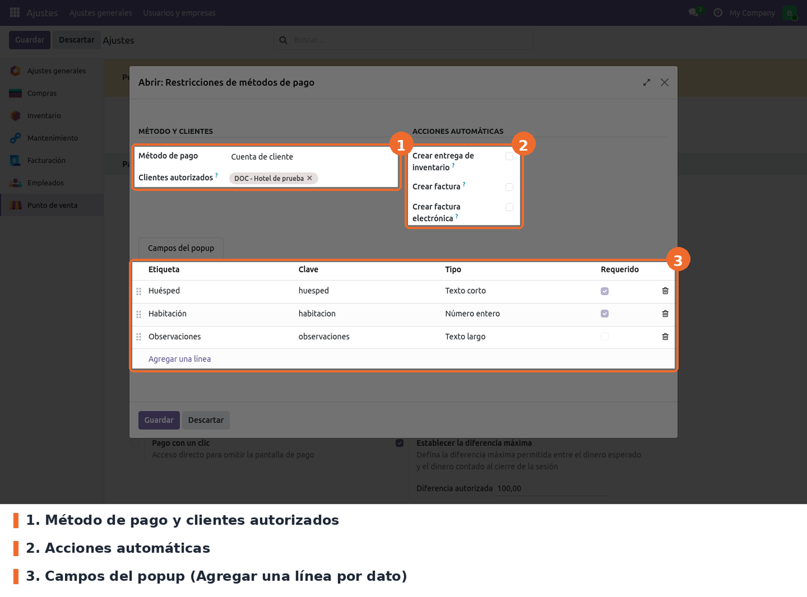
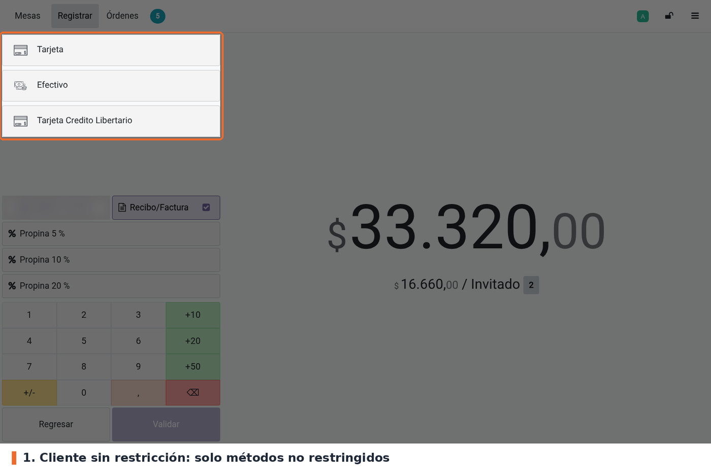
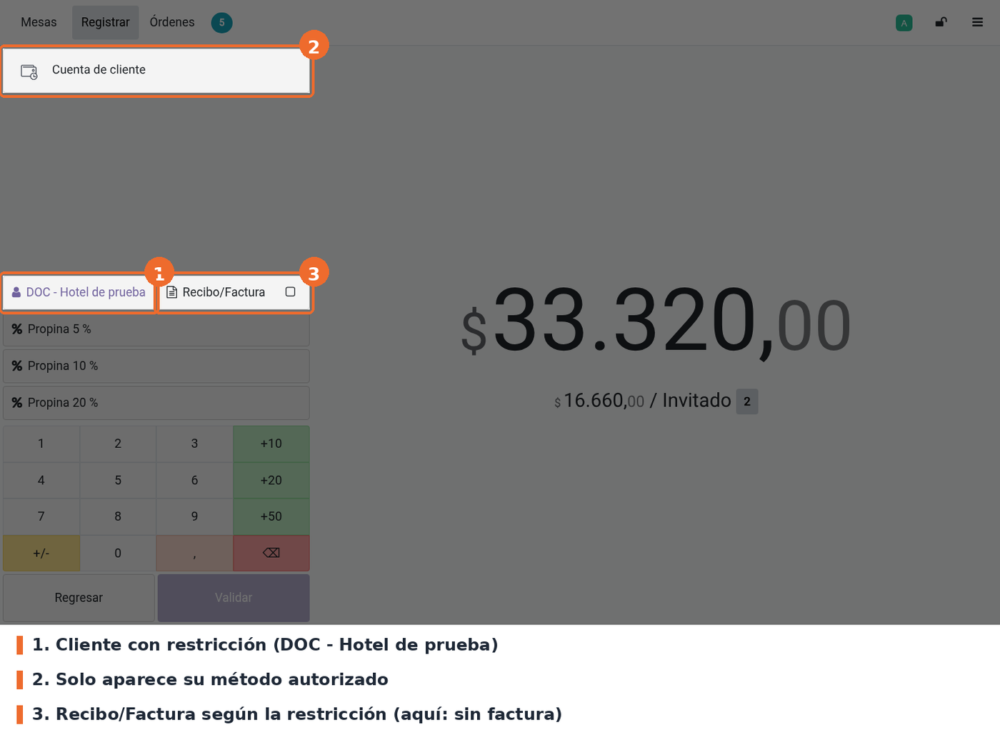
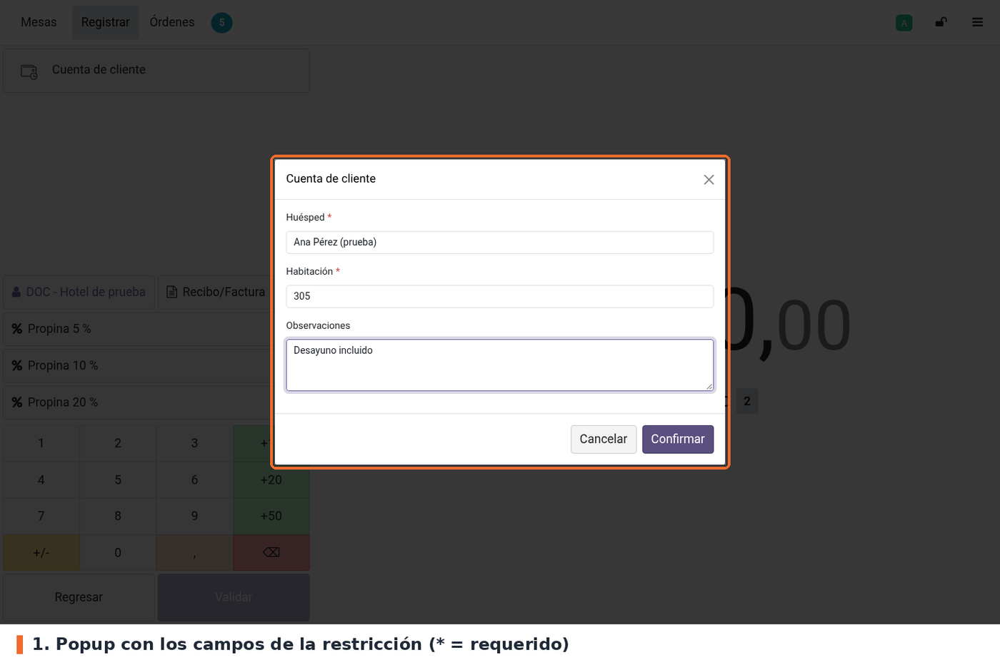
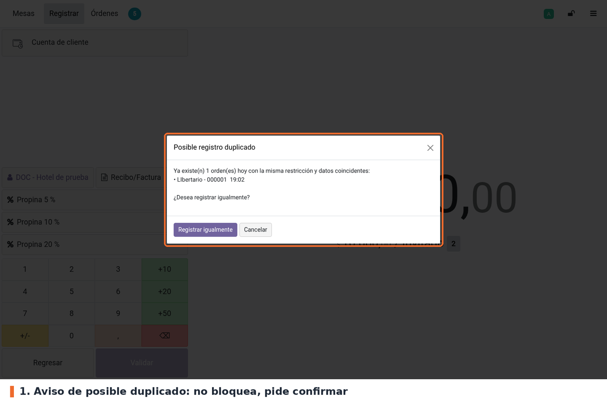
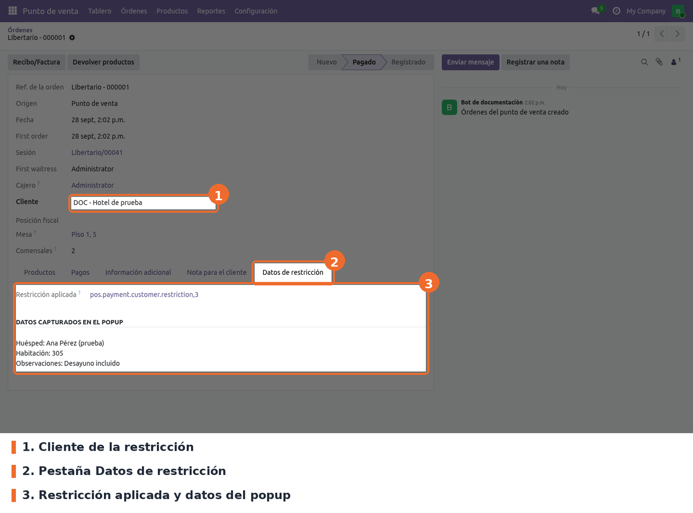
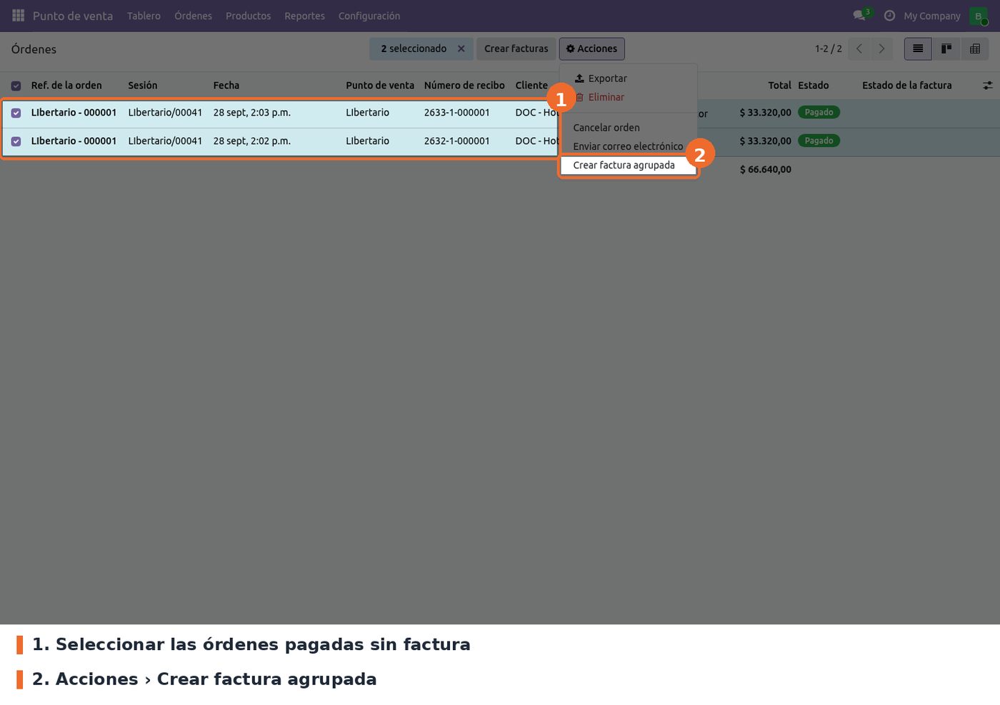
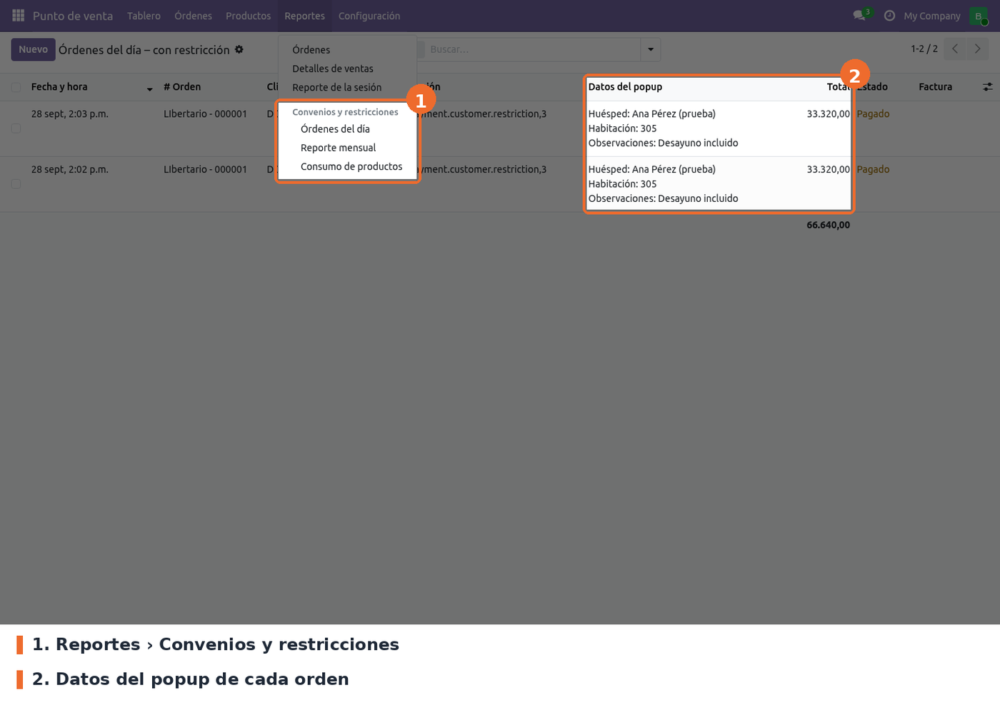

Permite reservar métodos de pago del Punto de Venta para clientes autorizados. En cada punto de venta se define una lista de restricciones: cada una asocia un método de pago con los clientes que pueden usarlo. En la pantalla de pago:
Cada restricción puede además:
Las órdenes que quedan sin factura se facturan después en una sola factura agrupada por cliente, desde la lista de órdenes. El menú Reportes › Convenios y restricciones muestra las órdenes con los datos capturados.
El caso que lo originó es el convenio de desayunos con un hotel: el huésped no paga, la orden queda a nombre del hotel con los datos del huésped y se factura al hotel al cierre del mes.
point_of_sale. No hay otras dependencias de Odoo ni librerías de Python adicionales.Instalar el módulo desde Aplicaciones. Crea dos modelos (pos.payment.customer.restriction y
pos.payment.restriction.field) con estos permisos: el grupo Punto de venta / Administrador puede
crear, editar y borrar; el grupo Punto de venta / Usuario solo leer, que es lo que necesita el
POS. Después de instalar o actualizar, hay que volver a entrar al POS desde el backend para que
cargue los archivos nuevos.
Los modelos, los campos y la tabla de clientes autorizados (pos_payment_restrict_partner_rel)
conservan el nombre técnico de la versión 17, así que las restricciones existentes se mantienen sin
script de datos.
Al actualizar desaparece la acción Crear factura electrónica agrupada: dependía del diario
electrónico del POS (electronic_invoice_journal_id), que Jorels 19 eliminó. Tampoco se porta el
archivo de 17 que desactivaba dos vistas de búsqueda de pos_sale, porque pos_sale no está
instalado.
Ir a Punto de venta › Configuración › Ajustes, elegir el punto de venta en la parte superior y buscar, en el bloque Pago, la opción Restricciones por cliente.

Punto de venta › Configuración › Ajustes › Pago: opción Restricciones por cliente y su lista
payment_restrict_enabled de pos.config). Opcional;
desmarcada por defecto. Es el interruptor general: con la casilla desmarcada el POS no filtra
métodos ni decide la factura, y la lista queda oculta (pero no se borra).La configuración es por punto de venta. Se puede cambiar con la sesión abierta, pero el POS la lee al cargar: los cambios se ven después de volver a entrar al POS.
Las mismas restricciones, de todos los puntos de venta, se consultan también en Punto de venta › Configuración › Restricciones de pago. Ahí cada línea indica su punto de venta.

Formulario de la restricción: método, clientes, acciones automáticas y campos del popup
habitacion). Sin campos, no hay
popup.A tener en cuenta:
hotel_guest y hotel_room de la orden (también sirven las claves huesped, guest,
nombre_huesped, room y numero_habitacion).En la pantalla de pago, la lista de métodos se recalcula cada vez que cambia el cliente. Con un cliente sin restricción, o sin cliente, los métodos restringidos no aparecen:

Pantalla de pago con un cliente sin restricción: faltan los métodos restringidos
Al elegir un cliente autorizado quedan solo sus métodos, y la casilla Recibo/Factura toma el valor de Crear factura de la restricción:

Pantalla de pago con un cliente del convenio: solo su método y sin factura
Si el método tiene campos configurados, al pulsarlo aparece el popup. Los campos marcados con * son obligatorios: Confirmar no avanza mientras estén vacíos. Cancelar, la X o la tecla Esc cierran el popup sin agregar el pago.

Popup con los datos del huésped antes de agregar el pago
Al confirmar, el POS busca órdenes de hoy con la misma restricción y algún valor igual (sin distinguir mayúsculas). Si encuentra alguna, muestra el aviso con el número y la hora de cada orden. Registrar igualmente sigue con el pago; Cancelar lo descarta. El aviso no bloquea: puede haber dos huéspedes en la misma habitación.

Aviso de posible registro duplicado
Los datos quedan guardados en la orden, en la pestaña Datos de restricción del formulario de la orden en el backend:

Formulario de la orden: pestaña Datos de restricción con los datos del popup
Al sincronizar la orden, el servidor vuelve a aplicar Crear factura de la restricción del cliente, aunque otro módulo del POS haya vuelto a marcar Recibo/Factura (por ejemplo la facturación obligatoria). Si el cliente está en varias restricciones, manda la del método con que se pagó. Hay dos excepciones: una orden que ya tiene factura no se toca, y la devolución de una orden facturada sigue facturada (lleva nota crédito).
Esto solo ocurre si el punto de venta tiene activa la casilla Restricciones por cliente. Los clientes sin restricción conservan lo que envió el POS.
En Punto de venta › Órdenes › Órdenes, seleccionar las órdenes y usar Acciones › Crear factura agrupada (no el botón Crear facturas del estándar).

Lista de órdenes: selección y acción Crear factura agrupada
Si la factura sale electrónica depende de Jorels 19 y del diario (ver Limitaciones conocidas). Verificar en STG.
El menú Punto de venta › Reportes › Convenios y restricciones (solo administradores del POS) tiene tres informes de órdenes con restricción:

Reportes › Convenios y restricciones › Órdenes del día
Hoy Reporte mensual y Consumo de productos dan error al abrirse (ver Limitaciones conocidas).
to_electronic_invoice de Jorels. Jorels 19
eliminó ese campo, y el POS solo lo marca si existe, así que hoy la casilla no hace nada. Se
propuso reemplazarla por un diario opcional en cada restricción, con script de datos. Falta que lo
confirme el líder técnico. Verificar en STG, donde la usan las restricciones que facturan con un
diario electrónico propio.context_today().replace(day=1) y context_today().weekday(), que el evaluador de
dominios del navegador no soporta. En el Odoo 17 de referencia los dominios son los mismos y ese
evaluador tampoco tiene esos métodos, así que el error viene de antes de la migración.pos.payment.customer.restriction,3 en la orden y en los
informes, porque el modelo no tiene un campo de nombre. Pasa igual en 17.is_hotel_order, hotel_guest, hotel_room y hotel_data_summary de la orden se
calculan y guardan, pero ninguna vista los muestra.REQUERIMIENTO IT DESAYUNOS HOTELES.md) pide también precios de
convenio, combo desayuno y bebida, el descuento del 10 % para huéspedes y anulaciones con
autorización. Este módulo no implementa esas partes.static/description/icon.png: en Aplicaciones se ve el ícono genérico de Odoo.models/pos_payment_customer_restriction.py y models/pos_payment_restriction_field.py: la
restricción (punto de venta, método, clientes, casillas) y los campos del popup, con la clave
calculada desde la etiqueta.models/pos_config.py: los campos del punto de venta y _load_pos_data_read, que agrega al
POS un diccionario plano de restricciones por método en config._payment_restrictions.models/res_config_settings.py: los campos relacionados de Ajustes. Su create escribe las
restricciones directo en pos.config, porque Ajustes puede descartar cambios en los campos del
popup cuando los IDs de las restricciones no cambian.models/pos_order.py: datos del popup (restriction_data, restriction_id y campos derivados),
búsqueda de duplicados, entrega en tiempo real, la decisión de to_invoice en
_process_saved_order y la factura agrupada.static/src/js/payment_method_restrict.js: parches de PaymentScreen (filtro de métodos,
popup, duplicados), de PosStore.selectPartner (vuelve a aplicar la factura al cambiar el
cliente) y de PosOrder.serializeForORM (envía restriction_id, que el POS descartaría porque su
modelo no está cargado en el POS).static/src/js/payment_restriction_popup.js y .xml: el popup, un componente sobre Dialog que
se abre con makeAwaitable.views/pos_config_views.xml: el bloque de Ajustes, las vistas de la restricción y el menú de
configuración. views/pos_hotel_report_views.xml: la pestaña de la orden y los informes.data/pos_order_server_actions.xml: la acción Crear factura agrupada.tests/test_restriction_invoice.py cubre la decisión de to_invoice en el servidor
(la restricción manda sobre lo que envía el POS, en los dos sentidos; clientes sin restricción y
casilla general apagada no se tocan) y la factura agrupada (una sola factura con el diario del
POS, órdenes en Registrado, sin refacturar). El filtro de métodos, el popup y el aviso de
duplicado no tienen test automático: se prueban a mano en el navegador._prepare_invoice_vals del estándar sobre todo el grupo
porque en 19 exige un solo punto de venta, usuario y posición fiscal, y partiría la factura de un
hotel por cajero. Lo llama sobre la primera orden del grupo: diario, posición fiscal y plazo de
pago salen de esa orden. La fecha de la factura es la de esa orden si su sesión sigue abierta, y
la del día si está cerrada.to_invoice en Python después de _process_saved_order, la
factura agrupada deja de funcionar. Revisar en particular la versión 19 del módulo de fidelización
de Jorels que usa STG.